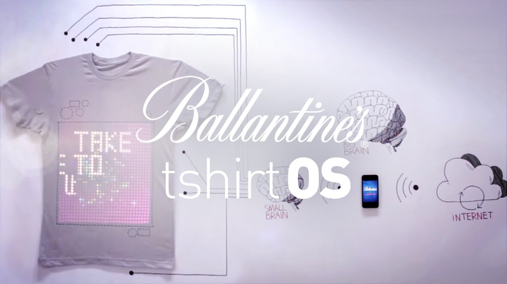

Portfolio HCI Marissa Hoekmeijer
Wearables research
Ook voor dit onderwerp heb ik wat onderzoek moeten doen over het internet naar andere bestaande wearables. Hierin kwam ik het volgende tegen:
Onderzoek naar een playful interaction op het web
TshirtOS, dit is een geprogrammeerd T-shirt waarin het verbonden staat met je telefoon. Het is gemaakt door het bedrijf Cute Circuit. Het T-shirt is gemaakt van katoen en hierin is een display verwerkt. Je kan gewoon het T-shirt vastpakken en kruikelen, dan nog is de display zichtbaar. Het werkt doordat het in contact staat met je mobile apparaat, dat daarna verbonden is met het internet. Via je mobile telefoon kan je ervoor zorgen dat er bepaalde vertoningen plaatsvinden op je T-shirt, die rechtstreeks van het internet afkomen. Dit komt doordat je telefoon een bepaald signaal uitzend met bluetooth naar de chip in het T-shirt. Hierdoor ontvangt deze chip informatie en zet deze chip dit om in content voor het display. Wat ik hier zo mooi aan vindt, is dat je via je T-shirt nu je zelf kan uiten. Ook hoeft je T-shirt nooit meer saai te zijn en kan je deze elke dag aanpassen. Het is interessant om te zien, hoe iets wat we al jaren normaal gebruiken kan innoveren met techniek.
